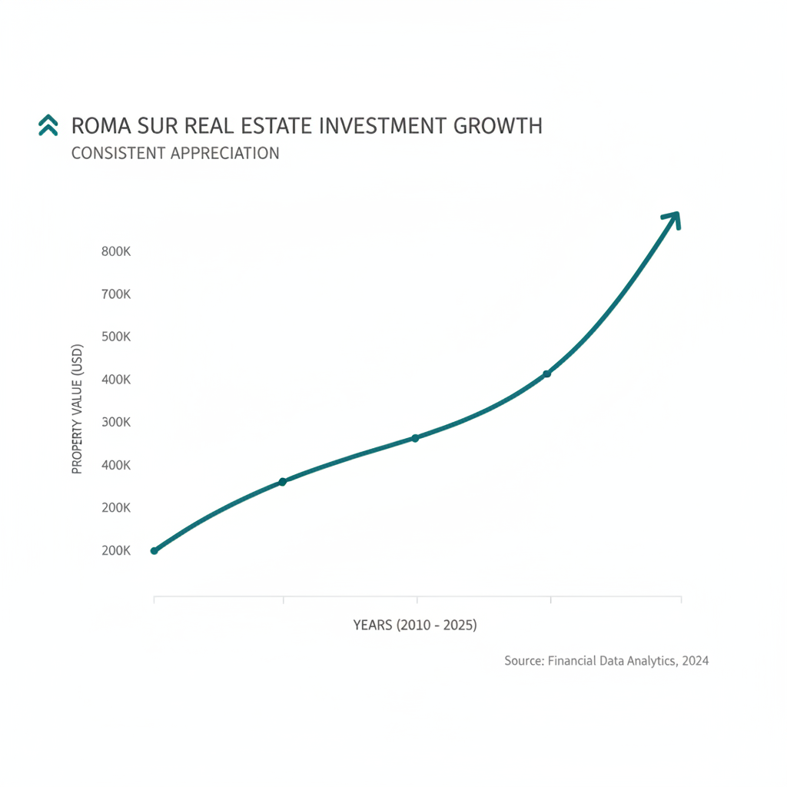

Architectural Guide 2026
The Unfolding Canvas of Roma Sur
Where cultural legacy converges with 21st-century architectural ambition, Roma Sur stands as Mexico City's premier micro-market for the discerning investor. We navigate its complex geological realities and intricate heritage mandates, transforming raw potential into a high-performing asset for 2026 and beyond.

The Resident Architect's View
As an architect deeply rooted in Condesa, I often find myself drawn to Roma Sur, particularly in the soft, late afternoon light that spills across Calle Tonalá, illuminating the intricate stone-carved facades. There’s a particular aroma there, a subtle mix of roasting coffee from a quiet panadería and the faint hint of aged wood from the Porfirian-era homes. I come for the tacos de canasta from the corner of Tepic and Monterrey, a humble pleasure that belies the significant architectural narratives unfolding. It’s a neighborhood that subtly asserts its presence, offering a more introspective counterpoint to its boisterous northern neighbor, yet humming with its own specific rhythm. It’s where history feels less curated and more lived-in, a testament to the city's continuous, shifting dialogue between past and present.

Erik Martínez, AIA
Principal Architect. Former SHoP Architects NYC. Bringing international precision to CDMX's most complex heritage assets.
Iconic Landmarks
- Avenida Álvaro Obregón (Monumental Artístico corridor)
- Chilpancingo Metro/Metrobus Hub
- Casa Lamm Cultural Center (adjacent, Roma Norte)
- Mercado Roma (adjacent, Roma Norte)
Architectural Resilience: Mastering Roma Sur in 2026
The residential real estate ecosystem of Mexico City has undergone a profound transformation, with Roma Sur emerging as a distinct, high-performance micro-market. As of the first quarter of 2026, this enclave has decoupled from the broader national average of 5.57% CAGR, presenting an annual appreciation rate of approximately 12% for renovated 'Lifestyle' properties. This shift is driven by a sophisticated migration of capital, prioritizing properties that seamlessly blend historic aesthetics with 21st-century technological infrastructure.
The Nomad Layer: Precision Engineering for a Global Workforce
The operational viability of a Roma Sur asset is now predicated on its ability to satisfy the rigorous infrastructure requirements of the 'Executive Nomad' demographic. We understand that a truly luxurious urban dwelling in 2026 means uncompromising acoustic serenity, robust digital connectivity, and absolute resource security. Our approach integrates advanced architectural solutions that transcend mere aesthetics, ensuring your property is not just beautiful, but inherently resilient and high-performing.
Geotechnical Reality: Building on Zone III Lakebed Clays
Roma Sur is located entirely within Zone III (Lakebed Zone), the most geotechnically sensitive region of Mexico City. The sub-soil here consists of extremely soft, high-plasticity elastic clays, extending to depths of 30 to 45 meters. These clays, characterized by a Plasticity Index (PI) of 200-300 and natural water content up to 600%, render the ground extremely compressible and amplify seismic waves significantly. This foundational truth dictates every aspect of structural design and construction within the neighborhood.
For any new construction, deep foundation systems—specifically friction piles (pilotes de fricción)—are non-negotiable, adding approximately 15% to 20% to structural costs compared to building in 'Zone I' (hilly ground). We mitigate the 'Gringo Tax' on construction labor, which can see quotes inflate to MXN 40,000+ per m² against a fair market rate of MXN 22,000 - 30,000 per m² for luxury residential. Our use of BIM (Building Information Modeling) methodology and itemized CONCEPT catalogs ensures transparency and cost efficiency, connecting US NCARB/AIA standards with local CDMX expertise.
Cultural Heritage: Navigating INAH & INBAL Mandates
As a designated Zona de Conservación Patrimonial, Roma Sur's architectural soul is protected by the Instituto Nacional de Antropología e Historia (INAH) for pre-Hispanic/colonial structures and the Instituto Nacional de Bellas Artes y Literatura (INBAL) for 20th-century artistic monuments. The concentration of 'Cataloged' buildings is particularly high in the northern and central parts of the neighborhood, showcasing the elegant transition from Porfirian eclectic to Rationalist and Art Deco styles.
Renovating a property on streets like Calle Jalapa or the 'Monumental Artístico' corridor of Avenida Álvaro Obregón requires strict adherence to the Manual de Imagen Urbana. This means exclusively using mineral-based lime paints in prescribed 'earth tones' (ochre, burnt sienna), prohibiting aluminum or PVC window frames in favor of restored wrought iron or solid wood (cedar/mahogany), and maintaining original facade apertures. Our expertise ensures compliance, avoiding costly 'suspension' orders and preserving the scarcity premium these unique properties command.
Water Security: The Cutzamala Crisis & Your Cistern Strategy
Water security is paramount in Roma Sur, a neighborhood designated as a 'water-stressed' zone, particularly during the dry season. While the Sistema Cutzamala undergoes a significant USD 39.6 million upgrade in 2026, localized scarcity remains a reality due to systemic leaks and network calibration by SACMEX. We recommend a minimum cistern capacity of 4,500 to 5,000 liters per unit for a typical 200 m² apartment, ensuring at least 3 days of resilience during municipal supply interruptions. The use of high-density polyethylene tanks, such as Rotoplas, is standard practice for contamination prevention and ease of maintenance.
Architectural Feasibility: Roma Sur 2026
| Project Type | Avg. Permit Time | Seismic Risk Level | Conservation Status |
|---|---|---|---|
| Lifestyle Renovation (Cataloged Property) | 3 - 5 Years (including 1-3 years permit) | High (INAH/INBAL + Zone III) | Exceptional (20-30% rental premium for seismic retrofitting) |
| New Construction (H/3/20/M Zoning) | 2 - 4 Years (including 1-3 years permit) | High (Deep foundations + Public Space Contributions) | Contextual Oversight (low-to-mid-rise character) |
| Interior Modernization (Non-Cataloged) | 6 - 12 Months | Medium (Acoustic & Power Upgrades) | High-Yield (7-9% gross rental yield) |
Invisible Modernization: Acoustic & Connectivity Excellence
Renovations in Roma Sur transcend surface-level aesthetics. We implement acoustic engineering solutions to mitigate urban noise pollution—from the 'Gasero Effect' to nightlife spillover. This includes installing dual-pane or triple-pane 'climalit' windows with asymmetric glass configurations (e.g., 6mm exterior / 12mm argon gap / 4mm interior) and high-mass perimeter walls. For digital resilience, we integrate an Uninterruptible Power Supply (UPS) for networking hardware and centralized voltage regulators (reguladores), ensuring 1 Gbps fiber optic connectivity via providers like Totalplay remains uninterrupted for the global executive.
Refined Interiors: A Sanctuary in the City
Our interior philosophy for Roma Sur emphasizes curated serenity. We design open-plan interiors within historic shells, using materials like local marble (MXN 350-400 per m²) and bespoke millwork that respects the original structure's integrity while delivering 21st-century functionality. The palette leans into sophisticated earth tones and natural textures, creating a tranquil environment ideal for remote work and sophisticated urban living. Every detail, from bespoke lighting to custom climate control, is calibrated to the ultra-high-net-worth individual's exacting standards.
The Roma Sur Cheat Sheet
- Best Streets Jalapa, Tonalá, Monterrey, Álvaro Obregón (Cataloged)
- Zoning Code H/3/20/M (Habitacional, 3 Levels, 20% Área Libre, Media Density)
- Est. Cost / m² MXN 22,000 - 30,000 per m² (Luxury Construction Labor, fair market)
- Best Coffee Café Brec
- Local Quirk The rhythmic, yet often challenging, morning serenade of the gasero trucks.

The Challenge
The primary challenge in Roma Sur lies in harmonizing the stringent requirements of a Zona de Conservación Patrimonial with the complex geotechnical realities of its Zone III Lakebed sub-soil, all while meeting the heightened infrastructure demands of a globalized clientele.
Securing a Manifestación de Construcción in the Cuauhtémoc Alcaldía is a process demanding patience, with 'actual' non-theoretical wait times ranging from one to three years. The DRO (Director Responsable de Obra) carries significant personal legal and criminal liability for structural integrity, making their expertise in Zone III construction indispensable.
Our Solution
We specialize in developing sophisticated engineering solutions that address differential settlement in older structures and ensure new builds utilize robust friction pile foundations. Our designs bridge the aesthetic requirements of INBAL with advanced seismic retrofitting (steel bracing, viscous dampers), achieving a 20-30% rental premium for safety-certified properties.
We eliminate the 'Gringo Tax' by employing professional project management firms and implementing BIM methodology, providing itemized CONCEPT catalogs. This ensures transparent costing, with luxury construction labor at fair market rates of MXN 22,000 to 30,000 per m², rather than inflated quotes exceeding MXN 40,000 per m².


Planning to Buy?
Don't sign a contract before a technical audit. We offer pre-purchase structural assessments in Roma Sur.
2026 Cost Report
Get our detailed breakdown of current labor and material costs for luxury residential in CDMX.
Start Your Roma Sur Legacy
NYC Precision. Mexican Craft. We eliminate uncertainty for international investors.